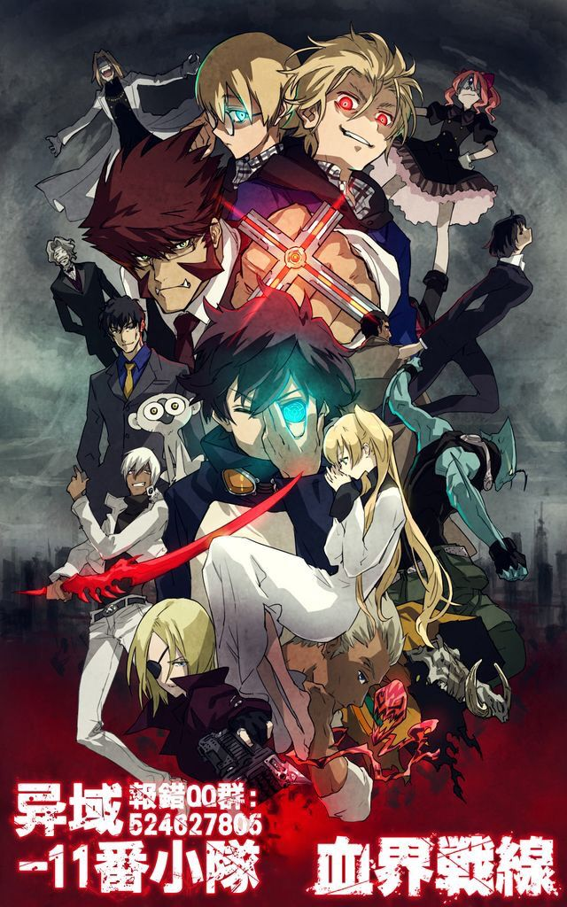
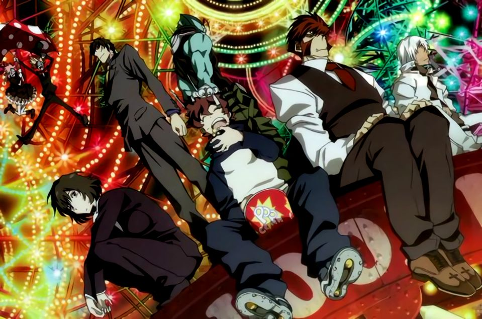

Now let's argue why Kekkai Sensen or Blood Blockade Battlefront is better than both DR. Stone and Demon Slayer
We can started by getting the through of the key plot of the series
- The story begin when setting around near future our worlds been take part in great event that connect to another dimension
- This event, called the Great Collapse, fused the city with the alien dimension, trapping humans, vampires, monsters, and various "Beyondian" creatures together.
- The resulting city is a chaotic, vibrant, and incredibly dangerous paranormal melting pot where magic and the mundane coexist. A secret barrier keeps the chaos from spreading to the rest of the world.
- And therefore we were introduced to our Protagonist a young photographer named Leonardo Watch who's happened to be in the city around the great event and result is been giving a mysterious abilities too see everything with his new given eyes
- During his time in the city an attack of a demon has made him joined Libra the organization has protect this city.
- Libra: A secret society of superhumans is dedicated to maintaining the fragile balance and preventing the city's unique anarchy from spilling over. and now we're joining the series in through the scope of daily life Libra
The Concept
- Before we dig deeper to the series i'll would love to share what i likes the most bout the concept of the world that they build
- Instead of using japan as center of the movies they have choose New York it's the city that would be hold any event happened in the movies
- The Character creation is also really unique cause there is no limit in term of races background and abilities everything it's lies in author imagination
- And unlike both other series when they gives too much talented or Intelligence, we been given an character that although given a great power but have to struggle like everybody else
- We can literraly put our shoes in the main Character shoes and still understanded his feelings
The Design
- Character and Weapon design are on The Point
- Character in the series are really well design each character have a lot of depth and some when you look at them you can feel
- Every Character background it present with really good through the character it self doesn't need some flashed back that gonna wasted us a episode
- And last the Weapon Design it's a combination of realistic and unique when a weapon look both pretty and it's close to reality
- The limitation of the weapon in the series only based on their abilities as a fighter not some with talent
My Conclusion
While Demon Slayer offers breathtaking, industry-leading animation and a compelling, emotional core rooted in Tanjiro's quest to cure his sister, and Dr. Stone provides a uniquely educational and relentlessly optimistic shonen experience centered on rebuilding civilization through the power of science, Kekkai Sensen surpasses both with its sheer creative vitality and stylistic mastery. The chaotic, neon-drenched metropolis of Hellsalem's Lot—a perfect blend of New York and alien realms—offers an endlessly fascinating backdrop, a world where the supernatural is simply a part of everyday life, allowing for a richer, more eclectic blend of episodic stories and character-driven moments compared to the more rigidly structured narratives of its rivals. Its distinctive jazz-infused soundtrack, the non-traditional protagonist in Leonardo Watch, and the unmatched kinetic energy of Studio BONES's fight choreography make it a stylish, cool, and structurally sophisticated series that prioritizes atmosphere and unique character dynamics over conventional shonen progression, cementing its superiority as a true piece of audiovisual flair and creative freedom.
- Or in my case it's just better.